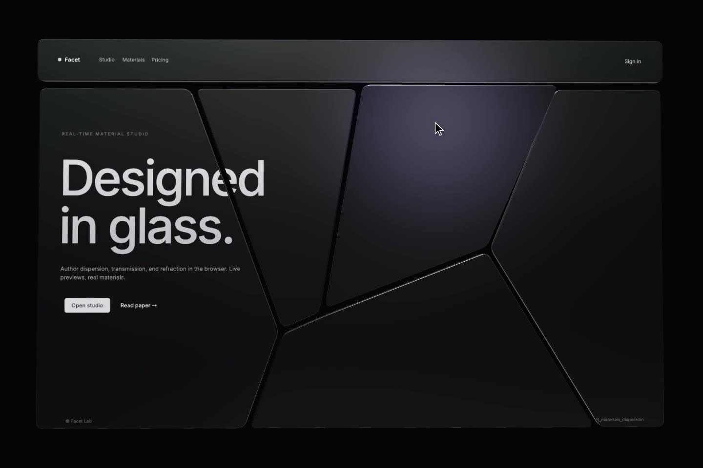
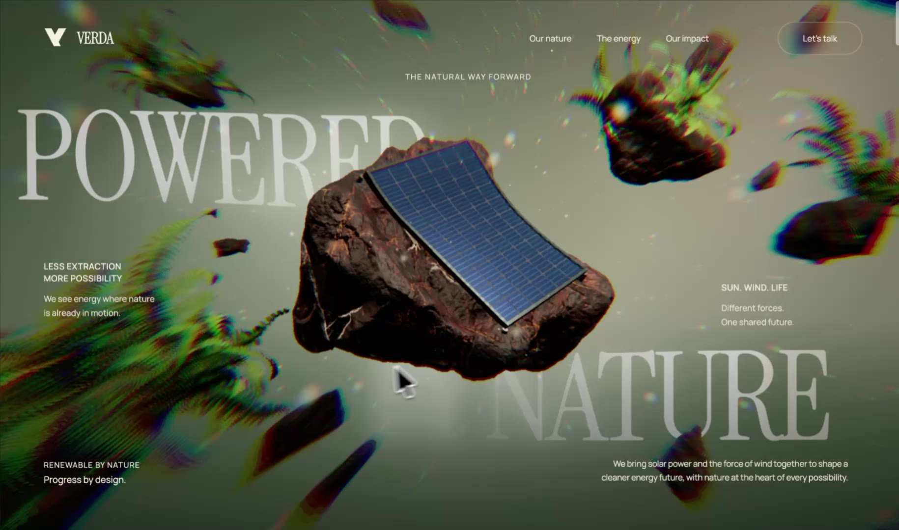

Studies are published as they are built and may not run on every device.
An open logbook of real-time rendering research: surfaces, fluids, fields, and the little tools we build to shape them.
It is here to keep the work in view and to give each new project a place to grow.
Forme, luce e movimento diventano un linguaggio. Due studi della collezione, osservati da vicino.

